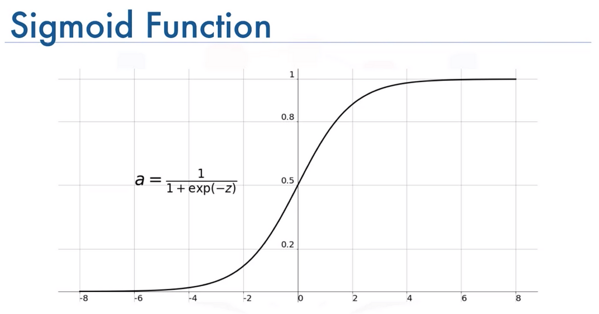

AI this, AI that — we have been hearing a lot of AI happening, but what is the core mathematics and rationale that runs and powers this boom? In this post, I will be covering some basics of what makes AI tick and discuss the basic and fundamental architectures that are the building blocks of this AI boom.
Alright, on to the main topic. This post presumes some basics in concepts like probability and basic mathematical intuition.
What machine learning and Artificial Intelligence tries to do is to write some sort of mathematical equation and then estimate or predict an output for corresponding input parameters. Bluntly, it is a very large and modified prediction problem, that's it!
1. The Basics: Linear Regression (A Fancy Best Fit Line)
If you have been to a physics lab in your 12th grade or college, you will have made a best fit line for some experiment. Congratulations, you have already implemented Linear Regression!
A linear regression presumes that your target is a linear function of the input parameters with the equation looking like:
A fancy way to write this would be using matrices as:
where W is a weight vector [a₁, a₂, ..., aₙ]T and X is the input feature vector [x₁, x₂, ..., xₙ]T. This is the most simple modeling approach.
2. The Classifiers: Logistic Regression, Naive Bayes, SVMs
• Logistic Regression
Consider the diagram below for the sigmoid function:
You can see that for extreme values of z, y goes to 0 or 1.

Congratulations! You have now created a continuous differentiable function (yes that is of importance, especially in backpropagation in complex systems) which acts like an "IF-ELSE"!
In general, one parameter is not enough, so we do a linear regression on z, thus making the general equation as:
• Naive Bayes
Unlike other algorithms, Naive Bayes presumes all events to be statistically probabilistic and can be modelled using Bayesian probability (i.e., follows Bayes' rule).
• SVM
But sometimes, a plain old line isn't enough to capture reality — for instance, projectile motion often looks like:
which clearly won't fit a straight line. In these cases, SVMs can tap into hyperplanes (multinomials) to handle these curved, multi-dimensional relationships.
Polynomial kernels let SVMs capture curved boundaries. Formally, a polynomial multi-dimensional SVM looks like:
where \(x\) and \(x'\) are your feature vectors, \(x^T x'\) is their dot product, and \(d\) is the kernel degree (i.e., how "polynomial" you want the relationship to be).
For the math enthusiasts, the polynomial kernel can be expanded as:
Here, \(i_1, i_2, \dots, i_n\) are non-negative integers, and the sum of their powers equals \(d\). The multinomial coefficient \(\frac{d!}{i_1! \, i_2! \, \dots \, i_n!}\) counts the number of ways to distribute \(d\) items into \(n\) bins with \(i_1\) items in the first bin, \(i_2\) in the second, and so on.
3. Onset of Complexity: Neural Networks
So far we have been modelled quantities as multivariate polynomials, but that may not be enough for most prediction tasks. For slightly more complex tasks, such as predicting if an image is a dog or not?
What we try to do is make multiple predictions, on top of other predictions.
We fix the number of parameters, model some inherent feature, then try to predict upon the presence/score of THAT feature and so on.
Something like:
Where:
x is the input vector
y is the output vector
L is the number of layers
Wi are the weight matrices for each layer
bi are the bias vectors for each layer
fi are the activation functions for each layer
Here's a visual explanation to help you understand better:
4. Sequential NNs: RNNs (and more)
Congratulations on making it this far! Until now, we've discussed models handling inputs without explicitly capturing dependencies across time or sequence. With RNNs (and similar architectures), we introduce mechanisms to retain and utilize historical information, unlocking a new category of inferences.
A common representation of a simple RNN is given by:
where:
- \(x_t\) is the input at time step \(t\).
- \(h_t\) is the hidden state at time step \(t\).
- \(W_x\) is the weight matrix from input to hidden.
- \(W_h\) is the weight matrix from the previous hidden state to the current hidden state.
- \(b_h\) is the bias term for the hidden state.
The hidden state \(h_t\) is passed to the next time step as \(h_{t-1}\), enabling the network to capture sequential dependencies by carrying information forward in time. This transfer of the hidden state is what allows RNNs to “remember” relevant aspects of the input history and apply those insights to future predictions.
Since only binary information is transfered from each state to next, and not all information is relevant hence this and similar architectures(LSTMs, GRUs) fail for very large sequences.
5. Daddy of ChatGPT: The Transformer
Alright, we've made it to the big leagues! Remember how RNNs struggled with long sequences because they had to process information step by step, like reading a book one word at a time while trying to remember everything that came before? Well, transformers said "forget that noise" and completely revolutionized how we handle sequences.
The key insight behind transformers is surprisingly simple: what if we could look at all parts of a sequence simultaneously and let each part decide which other parts are important to pay attention to? It's like having superhuman reading abilities where you can read an entire paragraph at once and automatically highlight the most relevant connections between words.
The Magic of Self-Attention
The heart of the transformer is the self-attention mechanism. Think of it as a networking event where every word in a sentence gets to introduce itself to every other word and decide how much attention to pay to each one. Mathematically, this looks deceptively simple:
But what do these mysterious Q, K, and V actually mean? Let me break this down:
- Query (Q): Think of this as what each word is "asking for" - like a search query
- Key (K): This represents what each word "offers" - like a database key
- Value (V): This is the actual information content each word carries
The attention mechanism computes how much each query should attend to each key, then uses those weights to combine the values. The \(\sqrt{d_k}\) term is there to prevent the dot products from getting too large (which would make the softmax too "spiky" and kill gradients during training).
Multi-Head Attention: Multiple Perspectives
But wait, there's more! The transformer doesn't just use one attention mechanism - it uses multiple "heads" in parallel. This is like having several different people read the same sentence, each focusing on different types of relationships:
where each head is computed as:
Think of it this way: one attention head might focus on grammatical relationships (like which adjectives modify which nouns), another might capture semantic similarities, and yet another might track long-range dependencies. It's like having a team of specialists all analyzing the same text from their unique expertise!
Positional Encoding: Teaching Position Without Recurrence
Here's where things get really clever. Since we're processing everything in parallel, we've lost the notion of position that RNNs had naturally. But word order matters! "The cat sat on the mat" means something very different from "The mat sat on the cat" (though both would make for interesting scenarios).
The solution? Add positional information directly to the input embeddings using sine and cosine functions:
Why sine and cosine? These functions have a beautiful property: they create a unique "fingerprint" for each position, and the model can learn to detect relative positions through their mathematical relationships. It's like giving each word a unique GPS coordinate!
The Full Transformer Architecture
The complete transformer combines several key components:
- Input Embeddings + Positional Encoding: Convert tokens to vectors and add position info
- Multi-Head Self-Attention: Let each position attend to all positions
- Add & Norm: Residual connections with layer normalization for stable training
- Feed-Forward Network: A simple two-layer MLP to process the attended information
- Another Add & Norm: More residual connections for gradient flow
The mathematical flow for each layer looks like:
where the Feed-Forward Network is typically:
Why Transformers Dominate
The transformer architecture has several superpowers that make it perfect for modern AI:
- Parallelization: Unlike RNNs, all positions can be computed simultaneously, making training much faster
- Long-range Dependencies: Direct connections between any two positions mean no information bottlenecks
- Interpretability: Attention weights show us exactly what the model is "looking at"
- Scalability: The architecture scales beautifully with more data and compute
This is why every major language model today - GPT, BERT, Claude (that's me!), and countless others - is built on the transformer architecture. We've moved from the sequential, step-by-step processing of RNNs to the parallel, attention-based processing of transformers, and the results speak for themselves.
And that's the transformer in all its mathematical glory! From humble matrix multiplications to the foundation of modern AI, it's a testament to how elegant mathematical insights can revolutionize entire fields. Next time you chat with an AI, you'll know there's a beautiful dance of queries, keys, and values happening behind the scenes! 🤖✨
Want to see the transformer in action? Check out our interactive visualization that brings all these concepts to life with animations and interactive demos!